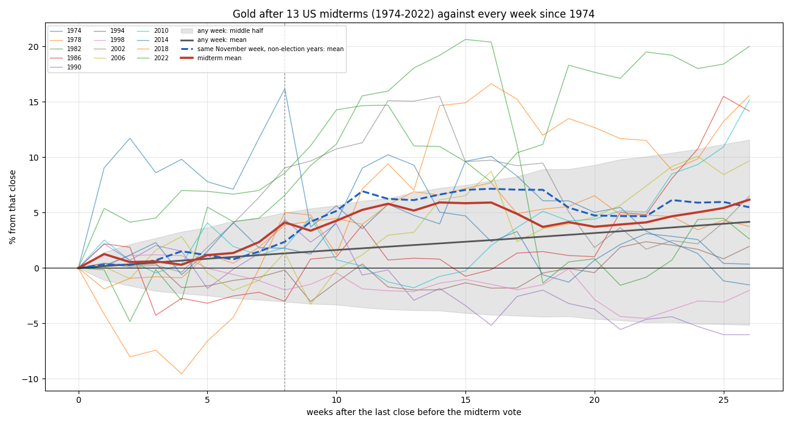

RS-XAUUSD-20261019-001 · XAUUSD · 2026-10-19
After 13 US midterms gold dipped and then rose 10% from the low in 7 — exactly as often as from the same November week in other years; the saying is gold's November-to-spring seasonality, not the election
美國期中選舉後，黃金是否比平常更常先跌、再漲 100 美金左右？
Headline Metrics 關鍵數字
0.5385
midterm s10 rate
0.5385
same calendar s10 rate
6.17
midterm r26 mean %
5.489
same calendar r26 mean %
Key Findings 重點發現
先跌，但跌得很少
13 次裡 11 次在選後 8 週內先跌，跌幅中位數 −1.85%。隨便哪一週起算，8 週內最低點的中位數是 −2.16%，所以「先跌」是常態，不是選舉造成的。
先跌再漲 10%：54%，和其他年的 11 月一樣
13 次裡 7 次（54%）先跌、再從低點漲 10% 以上。26 個非選舉年的同一週也是 54%；隨便哪一週是 37%（差 17 個百分點，樣本要差 38 個百分點才分得出來）。
選後半年報酬在雜訊內
選後 26 週平均 +6.17%；其他年同一週 +5.49%，隨便一週 +4.16%。13 次的樣本要差 11.7 個百分點才分得出來。
100 美金是金價水位造成的
2010 年以後每次都從低點漲超過 100 美金，因為金價已在 1,100 以上；2010 年以前只有 1982 年做到。以現在約 4,168 的價格，100 美金只有 2.4%，隨便一週先跌後有 67% 會漲到。
總統大選後也沒有比較好
13 次總統大選後 26 週平均 −0.69%，先跌再漲 10% 只有 15%；兩者都在雜訊內。
Chart 圖表


詮釋與實務意義
這個說法描述的走勢是真的，但原因不是選舉：每年 11 月起算的半年，黃金本來就常先小跌再上漲，期中選舉年和其他年一樣。「100 美金」只在金價高的年代成立。今年的投票日是 11/3（台北 11/4），不能當進出場依據。
限制與注意事項
- 只有 13 次期中選舉，每個比較都遠在可分辨範圍內。
- 用週收盤；2008 年以前看不到週內的低點。
- 設計前已在對話中快速看過一次結果（決策紀錄已揭露）。
- 每個觀察期都包含 12 月 FOMC，無法分開它的影響。